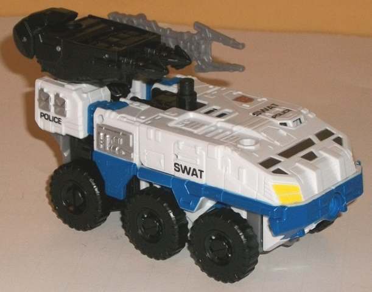
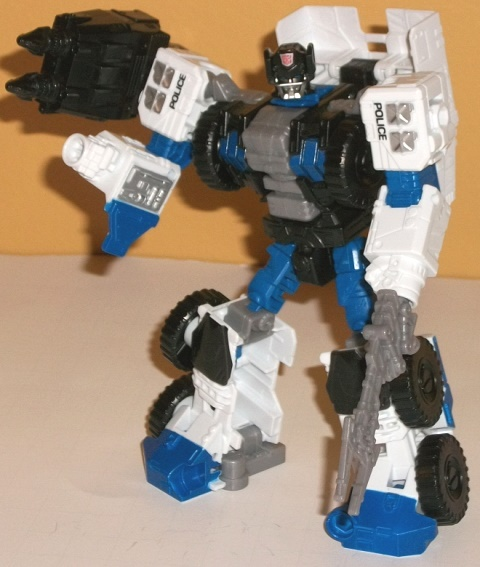
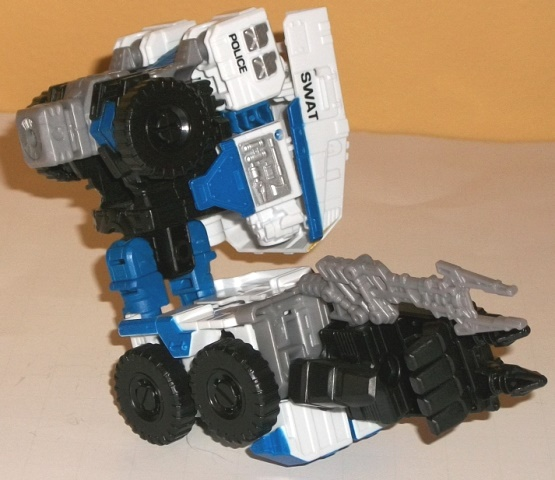
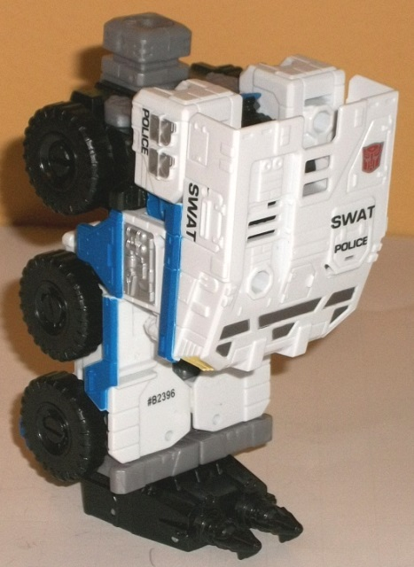

Allegiance
: Autobot
Size
: Deluxe
Difficulty of Transformation to Robot:
Easy
Difficulty of Transformation to Leg
:
Very Easy
Difficulty of Transformation to Arm
:
Very Easy
Color Scheme
: White, moderately
dark blue, black, and some light milky gray, light yellow, and metallic
gunmetal gray
Rating:
9.5


Rook is the new Protectobot
of the group, and he's a highly armored SWAT transport vehicle. Definitely
the most aggressive-looking of the Protectobots, that's for sure, but he
looks pretty good in this mode; nice, beefy tires, and a big, bulky chassis
with a lot of excellent mold detailing, with the requisite headlights,
opening hatches, armor plating, and other relevant details all over this
mode. The only weakness this mode has is the rear end; the rear bits are
obviously separated from the main section by a bit of blue that is the
middle of the arms, and there's a gap in between the sides in the back
(along with there being no real back end n this mode, just the upper part
of the robot chest and a folded-away back of the robot head). Still, unless
you're looking at him from the back end, this is a minimal downside. The
color scheme is mostly white, dark blue, and black, and very much fits
both the alt mode and the other Protectobots in terms of overall scheme.
The blue stripe around the middle and the black tires contrasts against
the white well, but what really helps to make this mode are all the paint
apps, which help to make Rook's vehicle mode stand out more. The SWAT and
POLICE symbols help identify him as a Protectobot, and having the headlights
painted yellow along with silver front windows and side details help to
pick out some of the myriad details on the mold. As far as weapons, Rook
has the regular hand/foot/gun weapon that comes with all Combiner Wars
deluxes-- his has two missiles detailed at the end of it-- and a weapon
that looks like an extendo-claw weapon. He has three 5mm ports for these
weapons in this mode-- on the top of each of the rear sections (which become
his robot shoulders), as well as on the top of the right side, slightly
behind the windows. There's also a 5mm peg sticking up out of the middle
of this mode, which you can stick the hand/foot/gun on top of as well,
though putting this weapon in the middle tends to make it overlap/obscure
a lot of the details; I prefer to put this accessory in one of the rear
ports instead.
Rook's robot mode is
pretty unique-looking, and quite broad and buff-- his proportions make
him look like a linebacker, which certainly fits his alt mode. This is
accentuated by his facesculpt, which makes it look like he's wearing some
sort of football helmet (with antennae), complete with a bar in front of
his face. The shoulders are very broad-- again, fitting his look, and the
chest and lower legs are quite wide too. The upper legs are a bit skinny,
but not distractingly so, and some allowances have to be made given how
the legs fold out. He does have one piece of vehicle kibble, and that's
the shell of the front half or so of his transport mode behind his back.
It certainly does poke out and make itself known, but it's far enough back
where it doesn't get in the way of articulation, and it doesn't hang down
SO far where it becomes an eyesore, so it's a minor downside at best. The
insides of his lower legs are distractingly hollow, though. The addition
of more blue and black in this mode helps to make Rook more visually interesting
despite the fact that there's fewer paint apps overall compared to his
vehicle mode-- the blue on the chest and the black on the knees looks nice,
but that's about it beyond his face (that wasn't carried over from his
vehicle mode). Rook's articulation is quite impressive-- he can move at
the neck, shoulders (at two points), elbows (at two points), hips (at two
points), knees, ankle tilts, and waist rotation. Thus, despite his bulk,
he can pull off some awesome poses. This is made all the cooler by the
5mm holes in the front of his fists-- you can attach not only his "extendo-arm"
weapon to make it look like a "real" extendo-claw, but Combiner Wars hand/foot/gun
weapons can also be plugged in here-- yes, you can give Rook "Hulk Hands"
by using a pair of gestalt hands, if you so desire! They look goofy, but
awesome, and certainly feel like they'd give him more "punching power".


Rook's arm mode is surprisingly
good, given how most Combiner Wars toys with bulky alt modes tend to have
so-so arm modes. Basically, from vehicle mode you fold back the front section
and then extend out the robot legs while flipping out the combiner port
from the robot chest-- like many arm modes, it's about half-way between
the vehicle and robot modes. Then, it's simply a matter of plugging in
the hand/foot gun in its hand mode into the bottom of Rook's feet. This
mode is pretty proportional for an arm, with all of the vehicle kibble
tucked very well back into a solid section as the shoulder, while the articulated
robot waist and legs serve as a nice lower arm. That said, because of the
width of his vehicle mode, the lower arm is just a bit wide, but this is
a fairly minor complaint-- I don't see how Hasbro could have avoided this.
Like other Combiner Wars deluxes in arm mode, Rook can move at two points
at the shoulders, two or three at the elbow depending on whether his legs
are facing forwards or backwards, rotation at the wrist, movement at the
thumb (at two points), and at the base of the four fingers on his hand
(all as one piece).
Rook's leg mode is very
similar to his arm mode; the only real difference is that the robot legs
aren't extended as in arm mode, and instead are compressed together as
they are in vehicle mode to form the bottom part of Rook's leg mode, with
the hand/foot/gun piece forming-- you guessed it-- the foot. As far as
the overall silhouette of this mode, it's pretty darned solid, and easily
passable as a leg, being pretty proportional in that respect. That said,
like in the arm mode there is one minor weakness, and that's that the front
section of the vehicle mode-- the "kneepad"-- sticks out a bit TOO much,
to the point where this would probably tip over if it didn't have the foot
piece attached. This can be remedied by simply turning Rook around, but
then you've got some bulk BEHIND the leg, and then the leg looks too much
like Rook's compressed robot mode, so it's best to just use the default
leg mode, in my opinion. As with all Combiner Wars "leg modes", Rook can
move at two points at the knees, and rotate at the foot peg.
Rook is my favorite
Combiner Wars deluxe mold by a hair. He's got great proportions, a unique
silhouette and gimmicks (HULK HANDS!), a solid vehicle mode (back end excepted),
excellent articulation, and a good amount of character for a "new guy".
His color scheme is also spread out and kept from looking boring in either
mode. Any downsides-- like the piece of vehicle kibble behind his back--
are minor at best and easily ignored. His arm and leg modes are also pretty
good, as well. Highly recommended, regardless of whether you want to combine
him or not.
Pre-mission psych-screening report
by Rung, Autobot Psy-Ops Specialist
:
Rook arrived as the newest member of
the Protectobot team, fresh out of the Cybertronian Military Academy. His
brain is filled with recent study of battlefield tactics and military maneuvers.
Now he has to figure out how to apply all that learning to rescue and emergency
situations. His heavily armored vehicle mode makes him fearless under fire--
many wounded Autobots have been cleared from danger by Rook and his powerful
hydraulic claw. Rook drags them away from the trouble and First Aid puts
them back together. It's all in a day's work for the Protectobots. With
fellow Protectobots forms Defensor.
CONCLUSION: Cleared for mission.
HISTORY (extracted from compulsory
biographical download):
Rook excelled at the Cybertronian Military
Academy, but never expected to be assigned to the Protectobot team. His
quick thinking and fearless attitude serve him well as the newest member
of the Protectobots. Forms either an arm or a leg of Defensor, the combined
form of the Protectobots.
Review by Beastbot